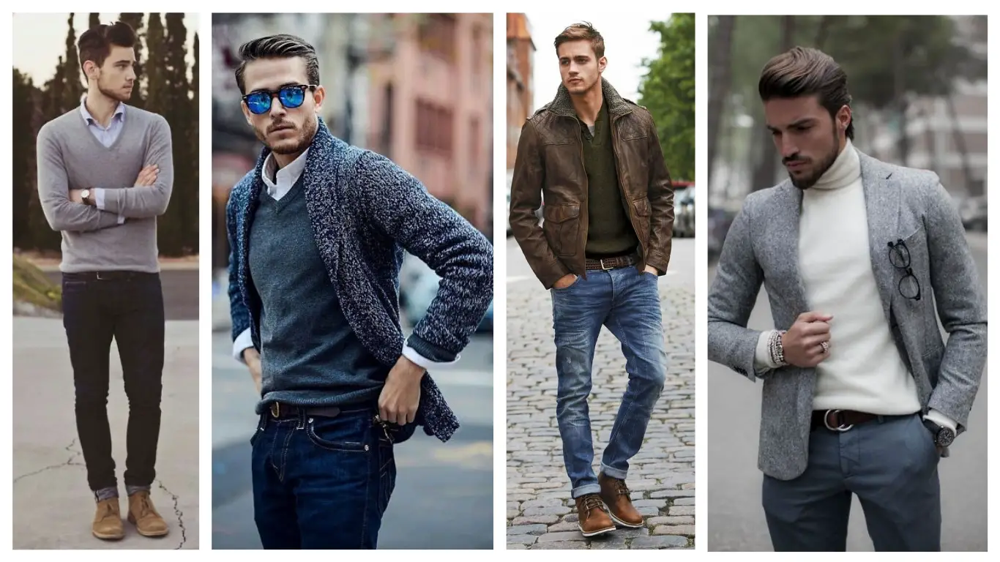
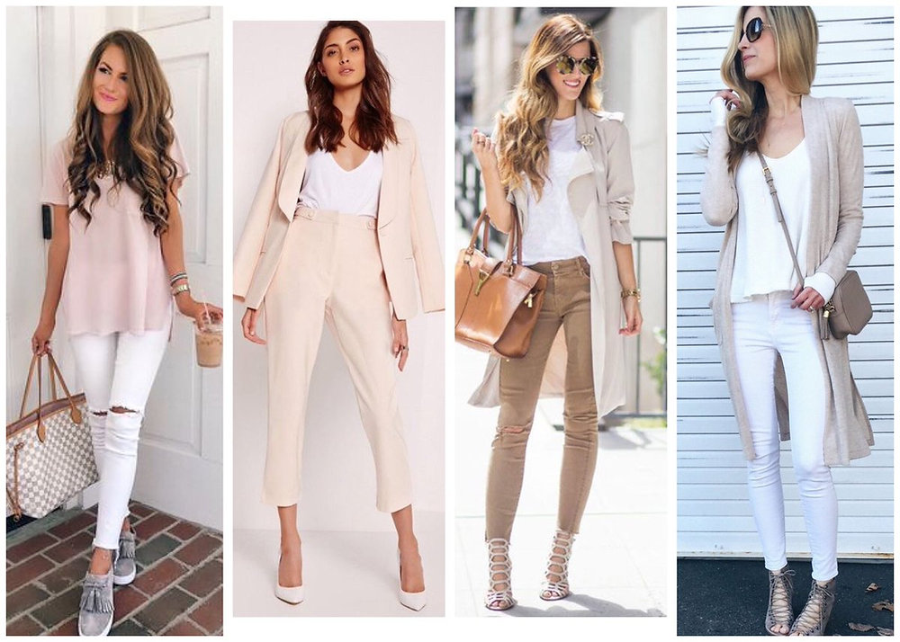

Nuestras reglas son claras.
Buscamos una armonía entre la vestimenta y el ambiente.
Para los hombres, buscamos un estilo casual elegante compuesto de colores neutros, para que el foco de los comensales sea la comida.
En el caso de las mujeres, también buscamos algo simple y no tan elaborado como en otros restaurantes.
En ambas partes, buscamos que los comensales se centren en su comida, por eso buscamos una armonía entre los colores de las prendas que puedan usar otros comensales.